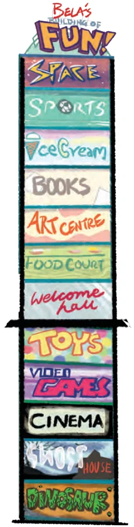

Entry to the ‘Building of Fun’ is at the ground floor level and is called the ‘Welcome Hall’. Starting from the ground floor, you can reach the Food Court by pressing \(+ 1\) and can reach the Art Centre by pressing \(+ 2\). So, we can say that the Food Court is on Floor \(+ 1\) and that the Art Centre is on Floor \(+ 2\). Starting from the ground floor, you must press \(- 1\) to reach the Toy Store. So, the Toy Store is on Floor \(- 1\) similarly starting from the ground floor, you must press \(- 2\) to reach the Video Games shop. So, the Video Games shop is on Floor \(- 2\). The ground floor is called Floor 0. Can you see why? Number all the floors in the Building of Fun.

Did you notice that \(+ 3\) is the floor number of the Book Store, but it is also the number of floors you move when you press \(+ 3\)? Similarly, \(- 3\) is the floor number but it is also the number of floors you go down when you press \(- 3\), i.e., when you press \(- - -\) . A number with a ‘+’ sign in front is called a positive number. A number with a ‘ - ’ sign in front is called a negative number. In the ‘Building of Fun’, the floors are numbered using the ground floor, Floor 0, as a reference or starting point. The floors above the ground floor are numbered with positive numbers. To get to them from the ground floor, one must press the ‘+’ button some number of times. The floors below the ground are numbered with negative numbers. To get to them from the ground floor, one must press the ‘ - ’ button some number of times. Zero is neither a positive nor a negative number. We do not put a ‘+’ or ‘ - ’ sign in front of it.